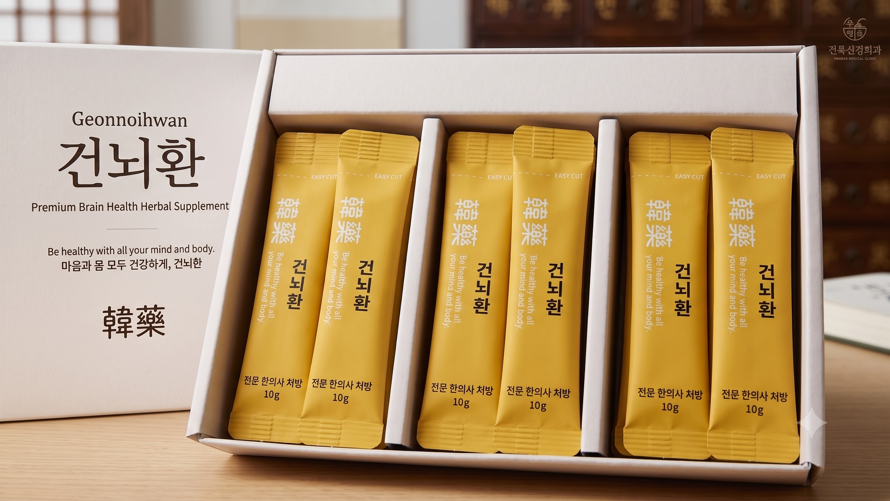
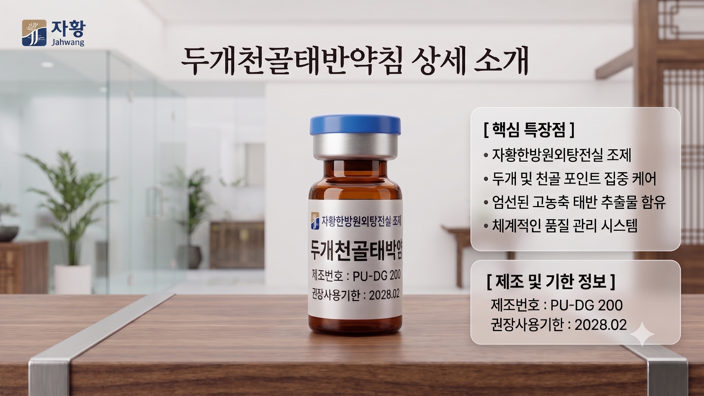

기억력·집중력 변화
최근 일이나 대화가 잘 기억나지 않는지, 일상생활에 어떤 불편이 있는지 살펴봅니다.
기억력 저하와 뇌 피로, 혼자 걱정하지 마세요. 우성한의원 건뇌클리닉에서 현재의 인지 건강 상태를 살펴보고 건뇌환과 두개천골태반약침 진료에 대해 상담하실 수 있습니다.
ABOUT THE CLINIC
건망증, 집중력 저하, 머리가 멍한 느낌은 수면 부족, 스트레스, 약물, 영양 상태 등 다양한 원인과 관련될 수 있습니다. 우성한의원은 증상과 건강 상태를 확인하고 필요한 진료 방향을 함께 상담합니다.
최근 일이나 대화가 잘 기억나지 않는지, 일상생활에 어떤 불편이 있는지 살펴봅니다.
건뇌환은 전통 한의학적 관점에서 개인의 증상과 체질을 고려해 처방 여부를 결정하는 환약입니다.
태반 유래 성분 등을 활용하는 약침 진료에 대해 적합성과 주의사항을 확인합니다.
BRAIN HEALTH CHECK
아래 항목은 진단검사가 아닌 상담 참고사항입니다. 해당 항목의 개수만으로 치매를 판단할 수 없습니다.
PERSONALIZED CARE
건뇌환과 두개천골태반약침을 중심으로 기억력 저하와 뇌 피로 등 인지 건강에 관한 맞춤 진료를 안내합니다.

전통 한의학의 관점을 바탕으로 개인의 건강 상태를 고려해 처방을 상담하는 환약입니다. 기억력 저하, 집중력 저하, 뇌 피로감을 호소하는 경우 진료 시 상담할 수 있습니다.

우성한의원에서 안내하는 태반 유래 성분(자하거) 등을 활용한 약침 진료입니다. 두피·두경부 상태와 개인의 건강 상태를 살펴 시술 여부를 결정합니다.
FREQUENTLY ASKED QUESTIONS
건망증만으로 치매를 진단할 수는 없습니다. 기억력 변화가 지속되거나 일상생활에 영향을 준다면 의료진의 평가가 필요합니다.
최근 들어 깜빡하는 건망증이 잦아졌거나, 머리에 안개가 낀 것처럼 멍한 '브레인 포그' 증상, 만성적인 뇌 피로감을 느끼시는 분들께 추천합니다. 건뇌환은 저하된 뇌혈류 순환을 촉진하여 두뇌에 산소와 영양을 공급하는 데 도움을 줍니다.
우성한의원에서 안내하는 태반 유래 성분 등을 활용한 약침 진료입니다. 진찰을 통해 시술 적합성과 주의사항을 확인합니다.
치매 진단을 받지 않았더라도 건망증이나 기억력 저하, 브레인 포그 등으로 뇌 건강 관리가 고민된다면 건뇌환 복용에 관해 상담할 수 있습니다. 원장님이 증상과 건강 상태, 복용 중인 약 등을 확인한 뒤 처방 여부와 복용 방법을 결정합니다.
비대면 상담을 신청할 수 있습니다. 비대면 진료 및 처방은 관련 제도와 환자 요건에 따라 진행됩니다.
VISIT WOOSUNG
월·화·수·금 09:30 ~ 19:00
목·토 09:30 ~ 14:00 (점심시간 없음)
점심시간 13:00 ~ 14:00
일요일·공휴일 휴진
임시 휴진 및 대체공휴일 진료는 전화로 확인해 주세요.